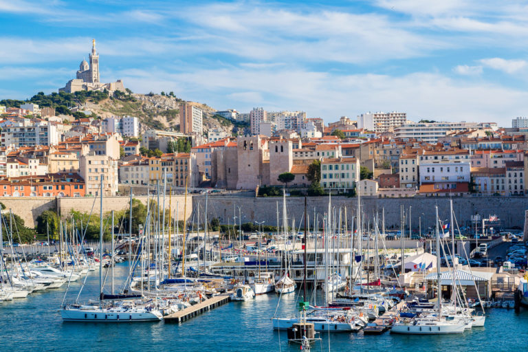

France reached its political and military zenith in the early 19th century under Napoleon Bonaparte, subjugating much of continental Europe and establishing the First French Empire. The French Revolutionary and Napoleonic Wars shaped the course of European and world history. The collapse of the empire initiated a period of relative decline, in which France endured a tumultuous succession of governments until the founding of the French Third Republic during the Franco-Prussian War in 1870. Subsequent decades saw a period of optimism, cultural and scientific flourishing, as well as economic prosperity known as the Belle Époque. France was one of the major participants of World War I, from which it emerged victorious at great human and economic cost. It was among the Allied powers of World War II, but was soon occupied by the Axis in 1940. Following liberation in 1944, the short-lived Fourth Republic was established and later dissolved in the course of the Algerian War. The current Fifth Republic was formed in 1958 by Charles de Gaulle. Algeria and most French colonies became independent in the 1960s, with the majority retaining close economic and military ties with France.
Napoleon Bonaparte seized control of the Republic in 1799 becoming First Consul and later Emperor of the French Empire (1804–1814; 1815). As a continuation of the wars sparked by the European monarchies against the French Republic, changing sets of European Coalitions declared wars on Napoleon's Empire. His armies conquered most of continental Europe with swift victories such as the battles of Jena-Auerstadt or Austerlitz. Members of the Bonaparte family were appointed as monarchs in some of the newly established kingdoms.
These victories led to the worldwide expansion of French revolutionary ideals and reforms, such as the metric system, the Napoleonic Code and the Declaration of the Rights of Man. In June 1812, Napoleon attacked Russia, reaching Moscow. Thereafter his army disintegrated through supply problems, disease, Russian attacks, and finally winter. After the catastrophic Russian campaign, and the ensuing uprising of European monarchies against his rule, Napoleon was defeated and the Bourbon monarchy restored. About a million Frenchmen died during the Napoleonic Wars. After his brief return from exile, Napoleon was finally defeated in 1815 at the Battle of Waterloo, the monarchy was re-established (1815–1830), with new constitutional limitations.
France has a developed, high-income mixed economy, characterised by sizeable government involvement, economic diversity, a skilled labour force, and high innovation. For roughly two centuries, the French economy has consistently ranked among the ten largest globally; it is currently the world's ninth-largest by purchasing power parity, the seventh-largest by nominal GDP, and the second-largest in the European Union by both metrics. France is considered an economic power, with membership in the Group of Seven leading industrialised countries, the Organisation for Economic Co-operation and Development (OECD), and the Group of Twenty largest economies.
France's economy is highly diversified; services represent two-thirds of both the workforce and GDP, while the industrial sector accounts for a fifth of GDP and a similar proportion of employment. France is the third-biggest manufacturing country in Europe, behind Germany and Italy, and ranks eighth in the world by share of global manufacturing output, at 1.9 percent. Less than 2 percent of GDP is generated by the primary sector, namely agriculture; however, France's agricultural sector is among the largest in value and leads the EU in terms of overall production.
France has been a centre of Western cultural development for centuries. Many French artists have been among the most renowned of their time; France is still recognised in the world for its rich cultural tradition.
The successive political regimes have always promoted artistic creation. The creation of the Ministry of Culture in 1959 helped preserve the cultural heritage of the country and make it available to the public. The Ministry of Culture has been very active since its creation, granting subsidies to artists, promoting French culture in the world, supporting festivals and cultural events, protecting historical monuments. The French government also succeeded in maintaining a cultural exception to defend audiovisual products made in the country.
France receives the highest number of tourists per year, largely thanks to the numerous cultural establishments and historical buildings implanted all over the territory. It counts 1,200 museums welcoming more than 50 million people annually. The most important cultural sites are run by the government, for instance through the public agency Centre des monuments nationaux, which is responsible for approximately 85 national historical monuments. The 43,180 buildings protected as historical monuments include mainly residences (many castles) and religious buildings (cathedrals, basilicas, churches), but also statues, memorials and gardens. The UNESCO inscribed 45 sites in France on the World Heritage List.
France is a representative democracy organised as a unitary, semi-presidential republic. As one of the earliest republics of the modern world, democratic traditions and values are deeply rooted in French culture, identity and politics. The Constitution of the Fifth Republic was approved by referendum on 28 September 1958, establishing a framework consisting of executive, legislative and judicial branches. It sought to address the instability of the Third and Fourth Republics by combining elements of both parliamentary and presidential systems, whilst greatly strengthening the authority of the executive relative to the legislature.
The executive branch has two leaders. The President of the Republic, currently Emmanuel Macron, is the head of state, elected directly by universal adult suffrage for a five-year term. The Prime Minister, currently Élisabeth Borne, is the head of government, appointed by the President of the Republic to lead the Government of France. The President has the power to dissolve Parliament or circumvent it by submitting referendums directly to the people; the President also appoints judges and civil servants, negotiates and ratifies international agreements, as well as serves as commander-in-chief of the Armed Forces. The Prime Minister determines public policy and oversees the civil service, with an emphasis on domestic matters. In the 2022 presidential election president Macron was re—elected.